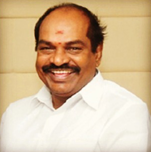

Welcome to BIHER
- "I am happy that you are joining our Institute for pursuing the course of study of your choice. This introduction to our Institution speaks of those features that reaffirm our faith in, and commitment to, the essential task of helping you transform yourself into a careerist in dental, medical, engineering and technology I am sure you will make the best use of the programmes offered, facilities provided and opportunities created here in your interest. I am quite confident that you will address yourself to the tasks of learning with a tremendous sense of involvement and come out successful with flying colours in your cherished endeavour. Let me greet you at the beginning of an academic journey towards the goal of a rewardingly prosperous career."
-

S. Jagathrakshakan
Chairman and Founder-BIHER
Bharath Institute of Science and Technology (BIST) started with Sri Lakshmi Ammal
Educational Trust as the first self-financing Engineering College in Tamil Nadu in 1984 by Dr. S.
Jagathrakshakan. The trust then established Sree Balaji Dental College and Hospital in 1989. Sree Balaji
Dental College and Hospital was first recognized as a Deemed to be University by MHRD in July 2002, under
section 3 of UGC Act 1956 and placed under the purview of new trust of Bharath Institute of Higher Education
and Research (BIHER). The Bharath Institute of Science and Technology (BIST) and other institutions (below)
was then brought under the ambit of Bharath Institute of Higher Education and Research (BIHER).
-
1. Bharath Medical College and Hospital (BMCH), Chennai
2. Sree Balaji College of Nursing, Chennai
3. Sree Balaji Medical College and Hospital (SBMCH), Chennai
4. Sree Balaji College of Physiotherapy
5. Sri Lakshmi Narayana Institute of Medical Sciences (SLIMS), Pudhucherry
-

Thus, Bharath Institute of Higher Education and Research (BIHER) is providing multi-stream, multi-cultural and high quality education to nearly 10000 students from around the world. It is functioning in a sprawling area of 603 acres of land with 1.3 crore sq.ft buildings located in 6 Campuses both in Tamil Nadu and Pudhucherry with the state of the art infrastructure facilities. There are well qualified Teaching Faculty members to teach various UG and PG programmes and to guide